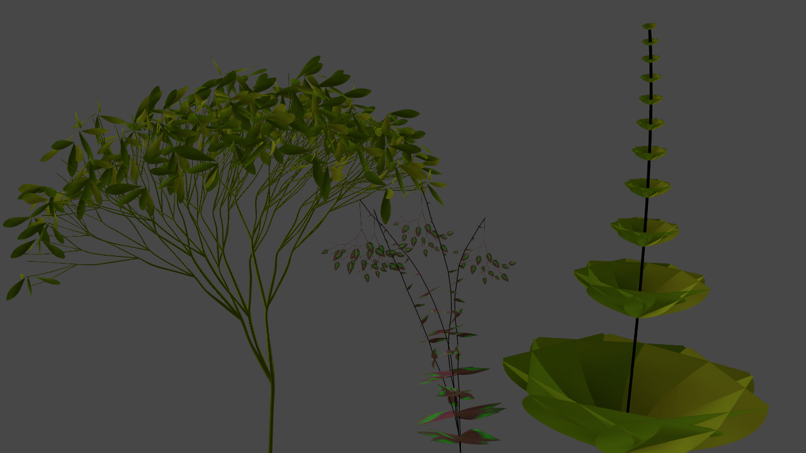

~ O T H E R ~
I'm fascinated by the way a computer is navigated via a terminal.
This feeling is emphasized whenever the computer is in fact a faraway server responding to your ssh.
The sequencial cd and ls, touching to see.
In a way it reminds me of "The books where you are the hero", especially when you are cheating and coming back to the last page cause you don't wanna lose the game.
Giving orders to the big void is somewhat scary and soothing.
~ C O M P O S I T I O N ~
More experimentation with saturation and compression. The intermodulation between voice layers is being hugely emphasized.
~ H Y D R A ~
The installation is going well !
We are all prototyping different form of sound and visual.
I'm working again on the poster, here is one of the last version.
The middle is still some hydra, this time made by Naoto Hieda.
See the code below.
~ T O U C H ~ D E S I G N E R ~
I learned a lot about TouchDesigner and the many ways of using L-Systems. More Here I still have a lot to figure out, modulating the angles of the left tree makes me drop to 3 fps.
Not so usable.
Also worked on some TOP, found a dithering patch and a fake pixel sorting.
Here are some 3D plants.

~ M E T A ~
I added a lot of info on previous projects, it will be building up in the next few month.
This follows my first attempt at joining the Webringtm.
It's really interesting to look back at previoulsy learned knowledge. Structuring it and making it understandable for other is a fascinating (and time-consuming) work.
~ F O N T ~
I started making my own font, a really basic one with only big rectangles.
I've always been curious of the process.
To make and export it I'm using Glyph in its trial version.
You can see an example of the caps in the poster above.
I've also dicovered JetBrains Mono font.
I'm always on the lookout for some new ways of looking at my IDE and this is a nice one.
Currently I'm using Monoflow, it is very funy and familiar, perfect for long dull hours in front of the screen.
~ C O M P O S I T I O N ~
This composition uses pretty much the same tricks as the last one (warping in texture mode, reverb with loads of compression...) but in a totally different genre.
My usual smooth / chill / noisy ambient. I'm happy with the result
~ T H O U G H T S ~
I've been using notion for some times and although I love it's system, it's quite slow, and a bit to complicated for what I'm doing.
I'm thinking about going for md file (obisidian ?) losing the sync with my phone in the process, which is quite convenient... To be continued
~ M E T A ~
I added a download tab with some max devices I've made during a synth course.
~ C O M P O S I T I O N ~
I'm trying new genre, inspired by the incredible videos of asd on exponential rhythms and grain delay.
It's really fun to make this kind of noise.
I'm back to working on Ableton after a modular pause and really enjoying it.
~ C O M P O S I T I O N ~
I worked for a project call, the APNEES collects sound work on the "PAYSAGE | COMPOSEE" theme.
Not having my computer when I stumbled on it, I used the devices that I keep at my parent's house.
Mostly obsolete technology that is too heavy to take from city to city.
I recorder the garden of my childhood through the open window and then slowly wear it down. Recorded it on the reel to reel.
From the reel to reel to the cassette deck.
From the cassette deck to the guitar amp recorded through an inverted speaker.
So on.
Here the final edit using intermediate state of the signal.
The final sound is a test made on the cassette tape.
I just felt like it belonged there.
~ S U P E R C O L L I D E R ~
For a course on digital lutherie, I've worked on a prototype called Komorebi (The sun filtering through the leafs in japanese).
The initial tought was to highlight the warm feeling of a sun beam caressing your face when walking under trees.
For this I use a headset with a light captor on it, this captor send midi info (value between 0 and 127) to Max/Msp, which treat the data and trigger SuperCollider function accordingly via local OSC.
You can find the code here (Github Link).
Here is an audio example of what you might hear :
~ p 5 . j s ~
I'll be woking soon on a A/V installation for my studies.
The idea I pursue for now is a projection of proceduraly generated visual, inspired by nature.
Those visual may be controled by some acoustic device, I was thinking horizontal guitar: something in the vein of a harp.
Depending on the frequencies, I'll use different generation algorithm.
Do to those visual I found what's called the L-Systems, a way of using Turtle Geometry.
I looks like this : Using "FF+[+F-F-F]-[-F+F+F]"
The string of character define the basic form that is going to be repeated, F for forward, + to add angle, - to decrease angle.
Next step is to add movement and make the branches apparition more smooth.
Here is the code for p5.js, generated by chatGPT:
let axiom = "F";
let sentence = axiom;
let rules = [];
// Ajoutez vos règles de production ici
rules[0] = {
a: "F",
b: "FF+[+F-F-F]-[-F+F+F]"
};
let len = 100; // Longueur initiale du segment
let angle;
function generate() {
len *= 0.5; // Réduire la longueur du segment à chaque itération
let nextSentence = "";
for (let i = 0; i < sentence.length; i++) {
let current = sentence.charAt(i);
let found = false;
for (let j = 0; j < rules.length; j++) {
if (current == rules[j].a) {
found = true;
nextSentence += rules[j].b;
break;
}
}
if (!found) {
nextSentence += current;
}
}
sentence = nextSentence;
createP(sentence); // Afficher la chaîne de caractères correspondante
turtle();
}
function turtle() {
background(51);
resetMatrix();
translate(width / 2, height);
stroke(255, 100);
for (let i = 0; i < sentence.length; i++) {
let current = sentence.charAt(i);
if (current == "F") {
line(0, 0, 0, -len);
translate(0, -len);
} else if (current == "+") {
rotate(angle);
} else if (current == "-") {
rotate(-angle);
} else if (current == "[") {
push();
} else if (current == "]") {
pop();
}
}
}
function setup() {
createCanvas(800, 600);
angle = radians(25); // Angle de rotation des branches
background(51);
createP(axiom); // Afficher l'axiome initial
turtle();
let button = createButton("Générer");
button.mousePressed(generate);
}
~ H Y D R A ~
I'm tinkering with Hydra, learning to properly use feedback, here is my latest work.
~ C O M P O S I T I O N ~
Frequently playing the modular with a friend of mine.
I'm learning to use the Teletype, here it play rotating chords on qu-bit chords, using the N.C operator. N.C A B C
Where A is Root, B is Chord Type, C is degree.
Voices switch degree each chord, generating a long portamento, phasing along the way.
I :
L 1 4: CV.SLEW I 10000
M 20000
M :
L 1 4: $ I
B P.NEXT
ADD X 1
1 :
CV 1 N.C A B MOD ADD 1 X 4
Same for script 2, 3, 4 with incremented degreeYou can change A to Change the root
J U C E
I'm doing well on Sinensis VST version: I've refactored all the code in a clean way.
implemented the odd/even high/low parameter.
Everything is working so far, but there is still a lots of works ahead.
I'm learning a lot about the juce framework and all his tools in the process.
Here is a first interface attempt to learn how to custom knobs ("juce::RotarySlider").
V C V ~ D E V E L O P M E N T
Long Time no See !
Lot of change, Wilt has been entirely re-though: no more reverb, now it's a buffer mess, reading and writing at a different speed.
I'm not entirely sure what is happening but it does sound nice.
Hellebore is done, added new elements to the panel.
All of this is out on the library.
I'm doing a VCV pause (maybe for ever, who knows) to discover JUCE !
For now I'm really lost on which function is calling what, where are the variable, lots of obscure pointer trickery
and Obviously UI is a mess.
Seems really complicated for now, will seems really logic in few month (I hope).
I though a lot about Sinensis as a vst and a lot more idea comes to mind, I should keep the UI simple, but with a drawer for manual settings of band.
New Param can be :
Midi input for the root frequency
Band quantization with scales
Manual access to each band
Split Global Q and Q tone, with multiple mode (odd/even, high/low, etc..)
same thing for Gain of each band instead of a simple "number of band Param"
Q and gain link (in Ableton eq 8 way)
~ C O M P O S I T I O N ~
I going back to Ableton and having a lot of fun with the warp parameters, granular and glitch.
A little Aphex Twin inspired noise mess :
V C V ~ D E V E L O P M E N T
With all the git learning, shuffling code left and right, I think that I've lost Tectorum and Volubilis.
It's not that big of a fuss, Tectorum was not that a good module and Volubilis was stuck.
I will probably rebuild Volubilis from the ground up, it's what it needed anyway.
I've made a working stereo cross-feed for Hellebore, I was really surprised by the fact that it compiled and worked at the first try, especially cause it is based on multidimensional array (and that's a field I'm very prone to make error in).
Variation pan the combs 2/4/6 more and more to the opposite side.
I now have a working Msys terminal in vs code !
Swapping between app is now a thing of the past. ~ C O M P O S I T I O N ~
Tried making a sequence with 4 square oscillators modulating the shift of Tides (thus giving some kind of quantization).
Big kick from a Maths voice, channel one as oscillator, channel two as pitch envelope.
V C V ~ D E V E L O P M E N T
I've made a first attempt at a stereo reverb, for now just two separated channel each processing an input.
I created a two dimensional array containing 6 combs filter in each columns.
Using a for-each loop over a for-each loop to iterate through all the combs in parameter update and processing functions, columns then rows.
I'm searching ways to cross feed the two-channels, first I'll try swapping filters (and their buffer) from one channel to another.
I'm thinking that I should create a struct to store all the parameter and write a global function calling all parameter update functions.
Lets do a little refactoring and cleaning before going further.
Lots of work (and bugs) ahead.
~ C O M P O S I T I O N ~
In the mood for some saturated sound.
I'm using all the tools at hand :
Morgasmatron channel A saturation switch
Morgasmatron Q-drive
Magneto rec-lvl
Veils level
Black Hole In level
Black Hole RIP algorithm
Fun stuff !
V C V ~ D E V E L O P M E N T
4 modules are finally out in the world ! here is the link to the plugin.
Hellebore is working, I'll start trying a stereo implementation.
I've also made a little manual in the readme of the noi github repo.
~ C O M P O S I T I O N ~
I'm having a lot of fun with the black hole, effects are a huge part of my musical creation and having more than one in my rack is really driving my creativity.
I will probably sell my plonk, disting and rampage that I use less and less.
Here the rampage is used solely for it's comparator, creating a grainy noise to pluck the filter.
The disting is used for the noise output of it's s&h algorithm.
V C V ~ D E V E L O P M E N T
I'm struggling to finish Hellebore, the nested function call makes it hard to debug.
The reverb calls the comb filter which calls the ring buffer. Those russian dolls creates a lots of possible cracks for bugs to slips in.
I've learned a bunch of things on how to declare an array of object.
It's going good but it takes all of my brain juice.
~ C O M P O S I T I O N ~
Just got a black hole dsp 2 from erica synth.
I was doubtful about the interface (I almost never use my Disting mk4), but it seems well focused and 24 algorithm is memorable.
Here is the first test with the pitched delay. Tides is used as a synced lfo. Sources are Dixie, Math, Plonk and a plucked Morgasmatron.